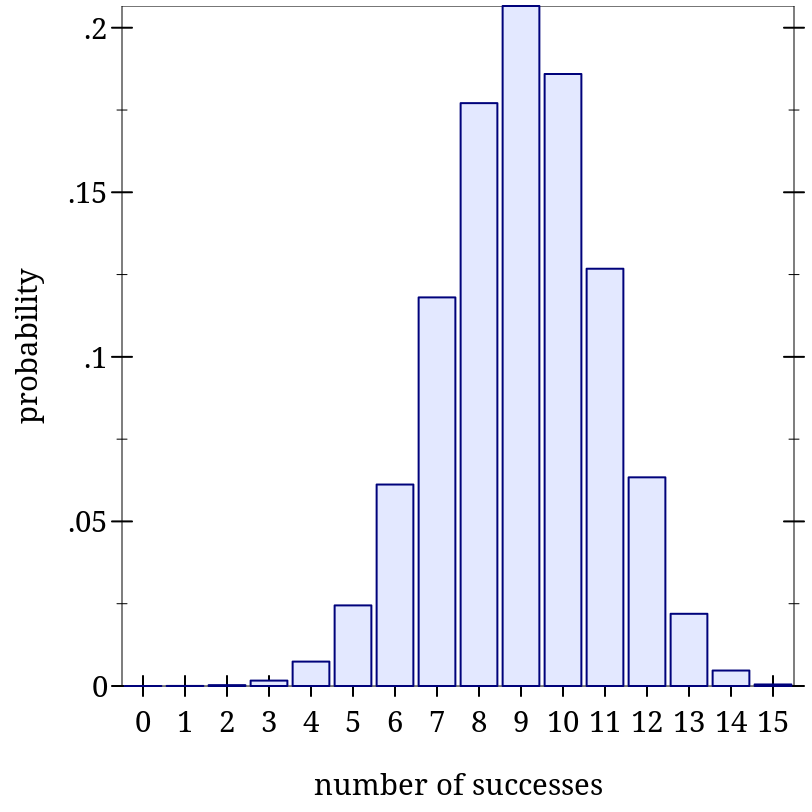
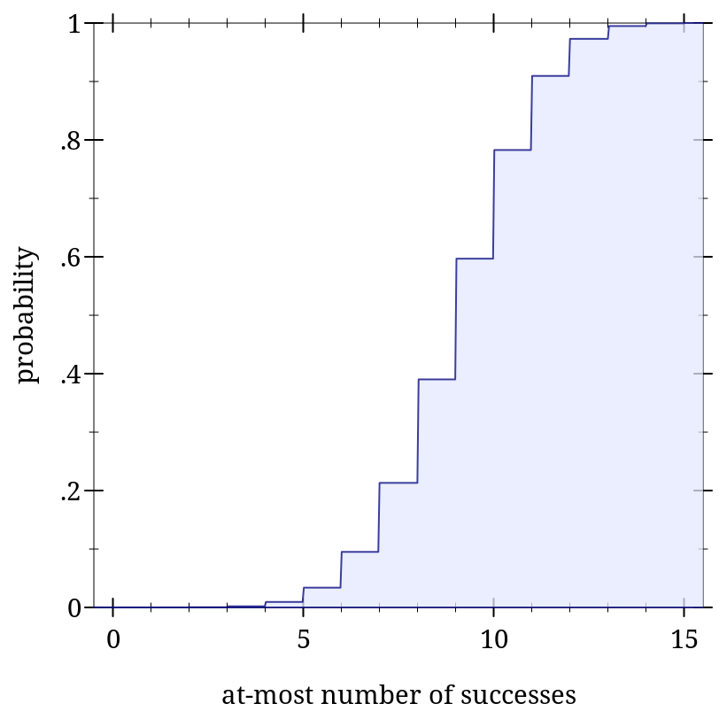
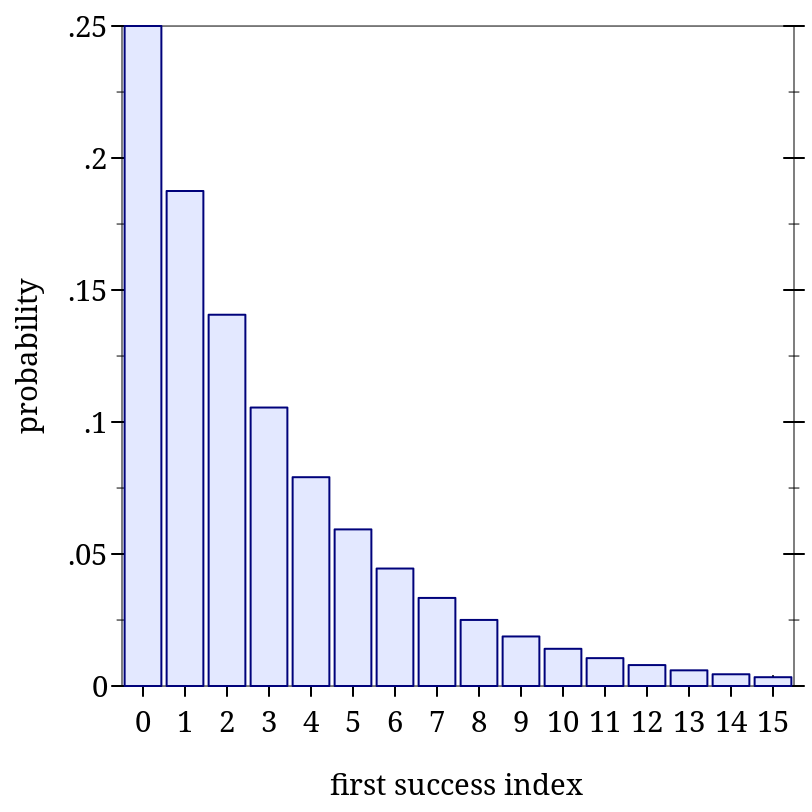
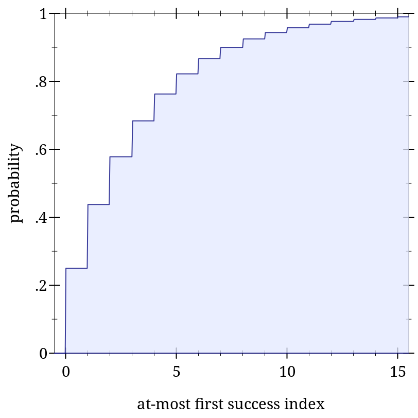
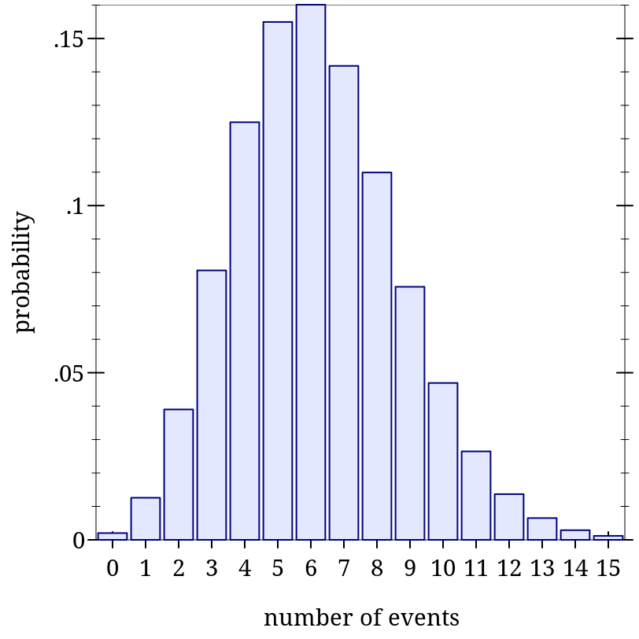
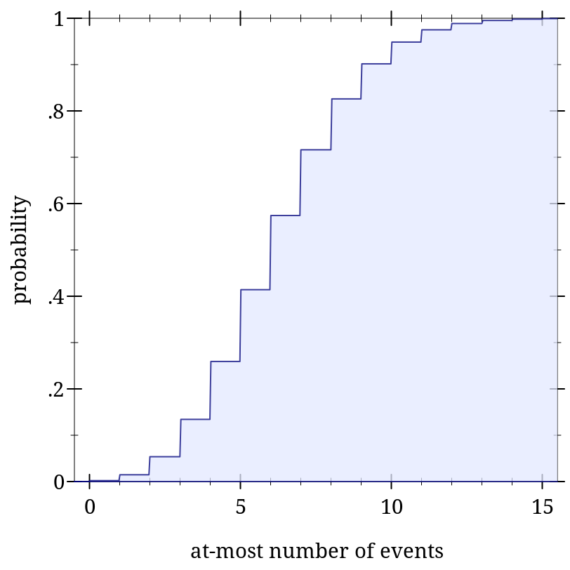

9.4 Integer Distribution Families
Mathematically, integer distributions are commonly defined in one of two ways: over extended reals, or over extended integers. The most common definitions use the extended reals, so the following distribution object constructors return objects of type Real-Dist.
(Another reason is that the extended integers correspond with the type (U Integer +inf.0 -inf.0). Values of this type have little support in Racket’s library.)
This leaves us with a quandary and two design decisions users should be aware of. The quandary is that, when an integer distribution is defined over the reals, it has a cdf, but no well-defined pdf: the pdf would be zero except at integer points, where it would be undefined.
Unfortunately, an integer distribution without a pdf is nearly useless. In measure-theory parlance, the pdfs are defined with respect to counting measure, while the cdfs are defined with respect to Lebesgue measure. So the pdfs of these integer distributions are pdfs defined over integers, while their cdfs are defined over reals.
Their domain of definition is the integers.
Applying an integer pdf to a non-integer almost certainly indicates a logic error, which is harder to detect when a program returns an apparently sensible value.
If this design choice turns out to be wrong and we change pdfs to return 0.0, this should affect very few programs. A change from 0.0 to +nan.0 could break many programs.
Integer distributions defined over the extended integers are not out of the question, and may show up in future versions of math/distributions if there is a clear need.
9.4.1 Bernoulli Distributions
Wikipedia: Bernoulli Distribution.
语法
函数
(bernoulli-dist prob) → Bernoulli-Dist
prob : Real
函数
(bernoulli-dist-prob d) → Flonum
d : Bernoulli-Dist
(bernoulli-dist prob) is equivalent to (binomial-dist 1 prob), but operations on it are faster.
> (define d (bernoulli-dist 0.75)) > (map (distribution-pdf d) '(0 1)) '(0.25 0.75)
> (map (ordered-dist-cdf d) '(0 1)) '(0.25 1.0)
> (define d (binomial-dist 1 0.75)) > (map (distribution-pdf d) '(0 1)) '(0.25 0.75)
> (map (ordered-dist-cdf d) '(0 1)) '(0.25 1.0)
9.4.2 Binomial Distributions
Wikipedia: Binomial Distribution.
语法
函数
(binomial-dist count prob) → Binomial-Dist
count : Real prob : Real
函数
(binomial-dist-count d) → Flonum
d : Binomial-Dist
函数
(binomial-dist-prob d) → Flonum
d : Binomial-Dist
> (define d (binomial-dist 15 0.6))
> (plot (discrete-histogram (map vector (build-list 16 values) (build-list 16 (distribution-pdf d)))) #:x-label "number of successes" #:y-label "probability") 
> (plot (function-interval (λ (x) 0) (ordered-dist-cdf d) -0.5 15.5) #:x-label "at-most number of successes" #:y-label "probability") 
9.4.3 Geometric Distributions
Wikipedia: Geometric Distribution.
语法
函数
(geometric-dist prob) → Geometric-Dist
prob : Real
函数
(geometric-dist-prob d) → Flonum
d : Geometric-Dist
> (define d (geometric-dist 0.25))
> (plot (discrete-histogram (map vector (build-list 16 values) (build-list 16 (distribution-pdf d)))) #:x-label "first success index" #:y-label "probability") 
> (plot (function-interval (λ (x) 0) (ordered-dist-cdf d) -0.5 15.5) #:x-label "at-most first success index" #:y-label "probability" #:y-max 1) 
9.4.4 Poisson Distributions
Wikipedia: Poisson Distribution.
语法
函数
(poisson-dist mean) → Poisson-Dist
mean : Real
函数
(poisson-dist-mean d) → Flonum
d : Poisson-Dist
> (define d (poisson-dist 6.2))
> (plot (discrete-histogram (map vector (build-list 16 values) (build-list 16 (distribution-pdf d)))) #:x-label "number of events" #:y-label "probability") 
> (plot (function-interval (λ (x) 0) (ordered-dist-cdf d) -0.5 15.5) #:x-label "at-most number of events" #:y-label "probability" #:y-max 1) 